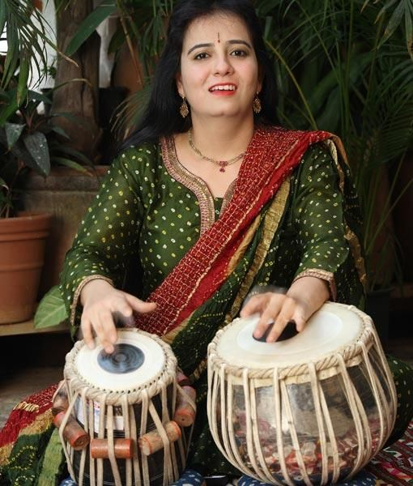

Turning the Tablas

Read the article about this event on Gulf News or here, at Global Konnekt
Anuradha Pal, Indian tabla artist, who was recently in Dubai

August 28, 2008 23:44
I consider myself fortunate to have had the power to dare to dream. My dreams led me to pursue my hobby that soon became my profession. Now I can't think of life without tabla....
No matter what the field, the power to succeed comes from strong determination. Fortunately for me my parents, who are accomplished professionals in their own right, supported me from the outset.
My father, Devinder, is a respected consultant in the pharmaceutical industry and my mother, Ila, is a well-known painter and writer.
They were both first rankers in their master's programmes, so I was always inspired to study and develop multiple interests in arts, science, sports, Indian and world culture, archaeology, philosophy and literature.
My parents and my husband, Shyam Sharma, inspire me. Their support and encouragement helps me deal with the gender discrimination that I still encounter in my profession and learn and practice with complete dedication.
Why the tabla?
People always ask why I chose the tabla and my answer is, "Why not?"
I started learning Indian classical vocal music at the age of seven with tabla as an adjunct to get a firm foundation of Taal (rhythmical pattern), Sur (a form of singing) and Raga (melodic modes).
Soon, I found the beautiful world of percussion and the language of rhythm so engaging that I started practising tabla with greater commitment. I was able to give my first public tabla solo performance when I was 10 and a half! As I learnt and practised, my interest developed into a passion and then a profession.
Being female and not from a family of musicians was a huge disadvantage since the traditional, chauvinistic sceptics were unwilling to give me a fair chance and a level playing field to learn and prove my talent.
I was inspired by my muses – tabla legends Ustad Alla Rakha and Zakir Hussain. Their amazing performances
and uncompromising standards encouraged me to practice for almost 10 hours daily, sacrificing everything that children normally do – friends, playtime, TV and so on. Playing the tabla became an obsession. It became my priority along with my studies.
Changing tradition
Over the years, I had to struggle to break traditional barriers. From performing my first tabla solo to accompanying India's leading musicians and creating revolutionary bands like the all-female group Stree Shakti and a world fusion group, Recharge, it was an uphill task. It still is! I continue to walk on this path with even greater conviction and a desire to discover new vistas of creativity and musical excellence.
As I continued to prove myself, apprehension gave way to awe, respect and appreciation. It is this change – from both industry professionals and the audience – that motivated me.
My first performance in Dubai was along with Ustaad Shahid Pervez Khan (on the sitar) at the Samanvay concert. I could saw the vibrancy of the city in its music afficinados.
Competing in the spirit of music
I love Jugalbandis (an ancient Indian art form where two musicians with different instruments or styles perform together), as they goad me to go beyond what I have done earlier. I have to understand the main musicians' style and respond in a convincing manner in a few seconds. I love the challenge.
The audience can tell that I enjoy the 'dialogue'
and interaction. Healthy respect for other artists is very essential to maintain equilibrium on the stage. Experimentation is key. I have tried to merge world music with tabla in all new music formats.
Learning curve
I learnt with complete surrender and respect from my master of Shishya Parampara. I had the benefit of excellent training.
Performing with music stalwarts gave me the confidence to discover the beauty of tabla and its depth. Performing at the World of Music and Dance Festival in Reading, UK, for an audience of 150,000 and hearing them shout, "We want more!" after my performance is a memory
I'll treasure.
I believe art is not restrictive. The more it is free, the more it blossoms. I enjoyed scoring music for the highly acclaimed film by MF Hussain Gaja Gamini. I have directed music for commercial music albums like Nirvana and Stree Shakti, which are huge hits in India and elsewhere.
I have learnt so much from not only my teachers but also from every musician and performance I have done around the world. Since our music is improvisatory and spontaneous, the challenge of rising to their standards is a great feeling.
My ambitions
I dream of becoming the best tabla player and the most versatile percussionist in the world. I will keep working hard. I hope I will always have courage, strength and conviction.
– As told to Jyoti Easwaran, a freelance writer based in Dubai